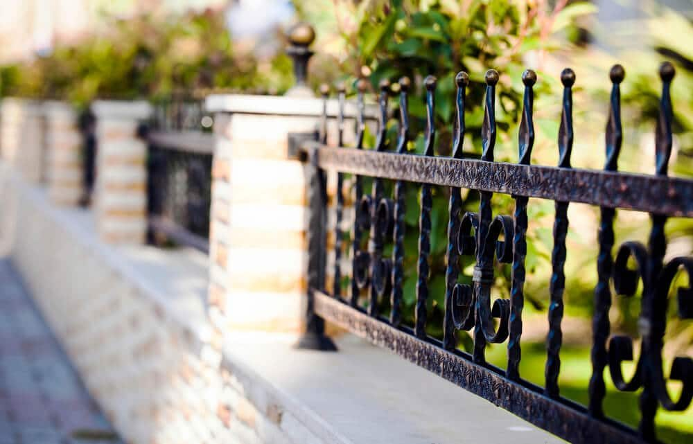

In This Guide
- A fence is part of your home's exterior, so its style, material, and color should agree with the house behind it.
- Farmhouse and cottage homes suit picket and rail fences, modern homes suit clean-lined metal or horizontal designs, and craftsman homes suit wood with detail.
- Older New Orleans homes often pair well with picket and wrought iron fences that echo the house's trim and ironwork.
- Choose color and finish to tie into the siding or brick, and keep the height in scale with the house and the neighborhood.
Most of us can picture a house with a fence that looks out of place: an ornate iron gate on a plain ranch, or a stark privacy panel in front of a cottage. A fence is part of the home's exterior, and it works best when it agrees with the house behind it. Here is how to match a fence to your home's style.
The team at Big Easy Fence looks at the house first and the fence second. If you want a wider look at what is available, start with our fence types, then use the notes below to narrow the choice.
Why the Match Matters
A fence frames the house the way a picture frame does. When the two agree, the property looks pulled together and the house gets the attention. When they clash, the fence draws the eye for the wrong reasons. A good match can lift curb appeal, and it still has to do its practical work: define the property line, add privacy, and provide security.
Matching a Fence to Your Home's Architecture
Look at the lines, materials, and details of your house, then pick a fence that echoes them.
Farmhouse and Cottage
These homes favor simple, functional shapes. A classic picket fence is the natural pairing, since it is plain and charming at once. A rail fence adds a rural, open feel. In white or a soft color, either one suits a house with a porch and wood siding. Ornate metal usually feels too fancy against this look.

Modern and Contemporary
Modern homes use clean lines and minimal decoration, and the fence should follow. Slim steel or aluminum with a simple pattern, or horizontal boards with tight spacing, keeps the look crisp. Stick to a limited palette, such as black, charcoal, or a natural wood tone.
Craftsman and Bungalow
Craftsman homes lean on natural materials and handmade detail. A wood fence with horizontal slats, tapered posts, or decorative caps echoes the trim on the house. Cedar is a common choice for this look. Stain the wood in a shade that picks up the porch columns or eaves.
Traditional and Historic
Older homes, including many of the raised and narrow houses found around New Orleans, pair well with fences that echo their trim and ironwork. A picket fence works for a cottage, and wrought iron suits a house with gallery railings and decorative details. Choose a design that reflects what is already on the house instead of adding something new.

A Quick Match Guide
| Home Style | Fence Style | Good Materials |
|---|---|---|
| Farmhouse or Cottage | Picket or rail | Wood or vinyl |
| Modern | Clean-lined bars or horizontal boards | Aluminum, steel, or wood |
| Craftsman | Horizontal slats with detailed posts | Wood |
| Traditional or Historic | Picket or ornamental iron | Wrought iron, aluminum, or wood |
Color, Material, and Scale
Once you know the style, three details finish the match.
Color and Finish
Look at the siding, brick, trim, and roof, and choose a color that ties into them. A white house takes a white fence easily. Brick often looks good with black, dark brown, or a warm wood tone. Wood takes stain and paint, which lets you fine-tune the shade, and staining also protects it from moisture in our climate.
Material
Pick a material that fits the look and the upkeep you want. A wood fence gives warmth and can be restained. A metal fence is slim and open, and aluminum will not rust in humid air. Vinyl stays clean-looking without painting.
Height and Scale
Keep the fence in proportion with the house. A front-yard fence is usually lower and more open than a backyard privacy fence, so the house stays visible. Check your neighborhood or homeowners association rules for height limits before you settle on a design.
Practical Points for Louisiana Homes
Style is only half of it. In our climate, the finish and material decide how good the fence still looks in five years. Humidity, sun, and heavy rain break down unprotected wood and unprotected steel. Whichever look you choose, ask how the material handles our weather, and plan on the upkeep it needs.
Bringing It Together
Not every house fits a tidy category. Many homes borrow from more than one style, or have been added onto over the years. When that happens, pick the feature that stands out most, such as a wide front porch, a brick facade, or a strong roofline, and let the fence follow that. Keep the front and side fences consistent so the property reads as one design, even if the backyard fence is simpler.
Start with the house, choose a style that echoes it, and let color, material, and height finish the job. If two options both look right, pick the one that fits how you plan to use the yard.
If you would like to see how a few designs would look with your home, our residential fencing team can talk through the choices, and a free estimate is a simple way to begin.
Want a Fence That Suits Your House?
Tell us about your home and the look you like. We will suggest fence styles and materials that go with it.